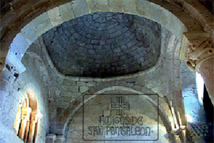

En el siglo XVII se incorpora un coro, y en el XVIII dos retablos barrocos, que ciegan dos huecos góticos, por lo que es necesario abrir una ventana para dar luz a la nave. Un siglo más tarde, en 1820 se construye la actual iglesia del pueblo, se traslada la pila bautismal a ella y la ermita deja de ser parroquia.
-
La ermita de San Pantaleón, además de poseer la importancia arquitectónica necesaria para ser declarada, en el año 1941, Monumento Artístico Nacional (lo que hoy es, Bien de Interés Cultural), atesora otra joya de gran interés, que es una talla de la Virgen, realizada en el Siglo XIII, dentro de la escultura gótica. Esta imagen gozó de gran devoción y ocupaba al lugar preferente en el altar mayor del ábside, junto con la del Santo.
- 
La talla está realizada en madera de nogal y policromada. Es una imagen sedente de la Virgen con el Niño sentado en su rodilla, sobre un trono de vivos colores. Originalmente Ella sostenía una manzana, hoy desaparecida. El Niño, por su parte, tiene una esfera en una mano, mientras bendice con la otra. A finales del siglo XX fue restaurada, y en la actualidad se encuentra en e Museo del Retablo de Burgos.